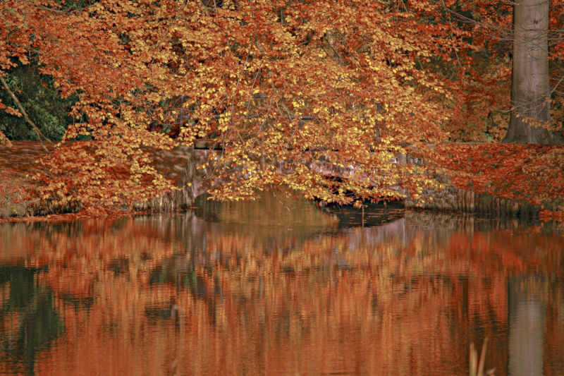

I chose this picture because, one I took this picture orginially and I am very proud of it. and two, because I tried to make the picture look very realistic with the multiple colors. I tried to make it look like one of those colorful fire sticks that you can throw into the fire to make it change colors.
I chose this picture because it looks so cool. It looks better than the original and this version gives it a more autumn type of feeling than the original one did.
I chose this picture because I thought I did a great job with the rainbow coloring because not a lot of pictures go good with rainbow coloring, but this one isn't a like POP out of rainbow, this one is more of a calmer version on the rainbow coloring.